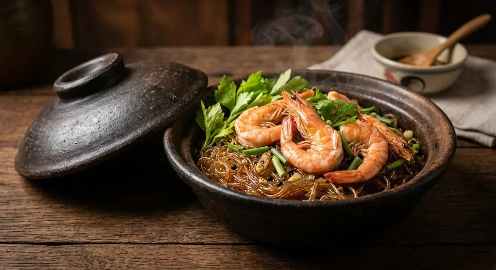

Prawns baked in a clay pot over ginger, pork fat and pepper-soaked glass noodles — the pot that arrives smoking at every seafood restaurant.

กุ้งอบวุ้นเส้น is Thai seafood restaurants' drama dish — the clay pot comes to the table with the lid on, and the first thing out when it opens is a cloud of ginger-and-pepper steam. Phol Food Mafia calls it what it is: one of the main dishes of Thailand's seafood restaurants. The technique is a bake, not a stir-fry: everything cooks under the lid in four to five minutes.
The secret the sources share is the sauce soak. Wongnai's version doesn't cook the noodles first — the dry glass noodles go straight into the seasoned stock and drink it until soft and clear, so every strand is flavoured before the heat comes on. Cookpad's Karuna Lo does the same at home: noodles coated in the sauce and rested.
The pot base does double duty. Wongnai lines the clay pot with pork belly slices — the fat renders as the pot heats, and nothing sticks or burns. Phol uses cubes of solid pork fat; Karuna Lo's home shortcut is bacon. On top of that goes the aromatic layer: mature ginger, coriander roots, black pepper, and — in Wongnai's and Phol's versions — the dish's signature spice, Sichuan pepper (พริกหอม), the numbing-humming note that separates this from every other prawn dish.
| Thai | English | Amount |
|---|---|---|
| กุ้งขาว | White prawns | 10 |
| วุ้นเส้น | Glass noodles (dry) | 1 pack |
| ขิงแก่หั่นแว่น | Mature ginger, sliced | 1 rhizome |
| รากผักชี | Coriander roots, crushed | 2 |
| หมูสามชั้น | Pork belly, sliced | 50 g |
| น้ำสต็อกหมู | Pork stock | 1 cup |
| ซีอิ๊วขาว / ซีอิ๊วดำ | White soy / dark soy | 2 tbsp / 1 tsp |
| ซอสหอยนางรม | Oyster sauce | 1 tbsp |
| น้ำตาลทราย / น้ำมันงา | Sugar / sesame oil | ½ tbsp / 1 tbsp |
| พริกไทยดำ / พริกหอม | Black pepper / Sichuan pepper | 1 tsp / 1 tsp |
| ขึ้นฉ่าย / ต้นหอม | Celery / spring onion | to finish |
Phol's restaurant-tight ratio: 40 g noodles, 100 g river prawns, 150 ml water, 1 tbsp oyster, 2 tsp white soy, 1 tsp dark soy, 2 tsp sugar, 1 tsp seasoning sauce, ½ tsp each pepper, 30 g pork fat. Karuna Lo's home version: tiger prawns, 2 small packs of noodles, 6 slices pork fat or bacon, half a cup of stock.
The base fat. Pork belly (Wongnai), solid pork fat (Phol), or bacon (Karuna Lo's home shortcut). Same job — render into the pot, stop sticking — but bacon adds its own smoke.
Stock or water. Wongnai uses a full cup of pork stock, Karuna Lo half a cup, Phol plain water with seasoning sauce. The stock versions are deeper and restaurant-like; the water version is Phol's clean-burning take.
Garlic or not. Phol chops garlic straight into the sauce; Wongnai runs none in the sauce but keeps the base gingery. Karuna Lo pounds a whole head of garlic plus coriander roots and pepper into the base. The garlic base versions are the punchiest.
Sichuan pepper. A teaspoon in Wongnai, half in Phol, optional in Karuna Lo ("sold at Makro, add or skip"). It's the signature hum — but it's also the easiest ingredient for a home cook to skip and still get 90% of the dish.
River or sea prawns. Phol specifies river prawns for their sweetness; Wongnai uses white prawns. Head-on is the restaurant default — the head fat sweetens the sauce as it bakes.
This recipe is translated from the following Thai-language sources. Where they disagree, we've said so.
1. Wongnai — "วิธีทำ กุ้งอบวุ้นเส้น เมนูเส้นเหนียวนุ่ม กุ้งแน่น" (the recipe used here: stock-soaked noodles, belly-lined pot) — wongnai.com
2. Phol Food Mafia — "Baked Prawn with Glass Noodles (กุ้งอบวุ้นเส้น)" (restaurant ratio, 4–5 minute bake, smoke signal) — pholfoodmafia.com
3. Cookpad — "กุ้งอบวุ้นเส้นหม้อดิน" by Karuna Lo (home version with bacon) — cookpad.com
4. Lemon8 — "กุ้งอบวุ้นเส้นสูตรบ้านๆ ทำง่ายในหม้อเดียว" (the pounded garlic-coriander-pepper base) — lemon8-app.com